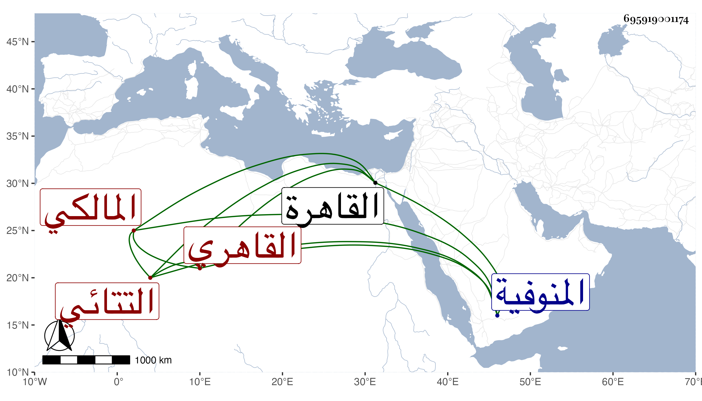

0902Sakhawi.DawLamic.ITO20230111-ara1.EIS1600.695919001174
Biography ID: 695919001174
881
هرون بن محمد نب موسى الزين أبو محمد السماني الأصل والمولد التتائي ثم القاهري المالكي زوج والدة الجمال يوسف التتائي ومربيه ووالد محمد وقاسم . ولد في سنة سبع وثمانمائة بسمان من المنوفية وانتقل مع خاله إلى تتا فقرأ بها القرآن والرسالة والشاطبية وألفية النحو وجلس ببلده يعلم الأبناء فانتفع به في ذلك أهل النواحي فإنه كان مبارك التعليم جيده لكونه تلا بالسبع على بعض القراء واستقدمه بنو الأنصاري القاهرة في سنة خمسين فاستوطنها وأقرأ أولاد رئيسهم الشرف وأخذ عن أبي القسم النويري ولازمه حتى سافر الشيخ وكذا كتب عن شيخنا في الإملاء وكان كثير التلاوة مديما للقيام والتعبد ساكنا مع حسن الفهم حج مع الرجبية في سنة إحدى وسبعين . ومات في ذي الحجة سنة ثلاث وسبعين رحمه الله وإيانا .
